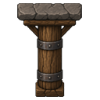
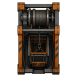
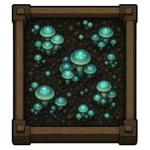
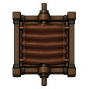

Where the deep goes next
Raid coordination, ritual escorts, shaft routing, sealed-shaft sieges, ventilation research, placement guides, alerts, self-tests, README. Dedicated art for smoke hole, updraft filter, and related buildings has landed with the Pillar 4–5 art pass.
Atmosphere, geothermal chambers, deep gas economy, O₂/CO₂ life support, dig-down progression, and the first sunken-ruin quest sites.
Steam geysers sealed in rock, found by mining. Vanilla geothermal works underground.
Smoke, deep gas, O₂, and CO₂ share one room simulation. Every vent tool works on every gas.
Wells, canisters, smokeless deep-gas generators — with VHGE pipe feed when that mod is loaded.
Cross-level junctions for DBH, DCH, Rimatomics, VHGE, Rimefeller, plus VEF chemfuel when present. Soft dependencies only.
Paired shaft nodes meter transfer between levels — no splicing pipe nets across maps.
Above-ground floors. Sky is the new rock. Still the major open design target.
Upper maps tied into the same shaft graph, power, fluids, and atmosphere — rooftop solar, tower greenhouses, sky bedrooms.
Exploration beyond the colony basement column.
Collapsed mines, sealed vaults, and geothermal vents join sunken ruins — each with its own stairhead and pocket warren.
Fungal, flooded, frozen, and volcanic warren themes on quest sites.
Home-colony incidents that open natural side caves off a rock face — plus prospector digs and lost miners.
Engineering so living deep is a design puzzle, not only dig-and-vent.

Brace roofs against cave-ins; seal rooms for gas without sealing the whole shaft.

Bulk vertical logistics for chunks and slag between linked levels.

Fungus beds that breathe with the atmosphere, sump pumps for seepage, flame-safe mine lamps.

Shaft bellows and lime scrubbers before powered O₂/CO₂ pumps.
Medical and joy relays, level roles in the Levels tab, and caravan packing that pulls goods up from below.